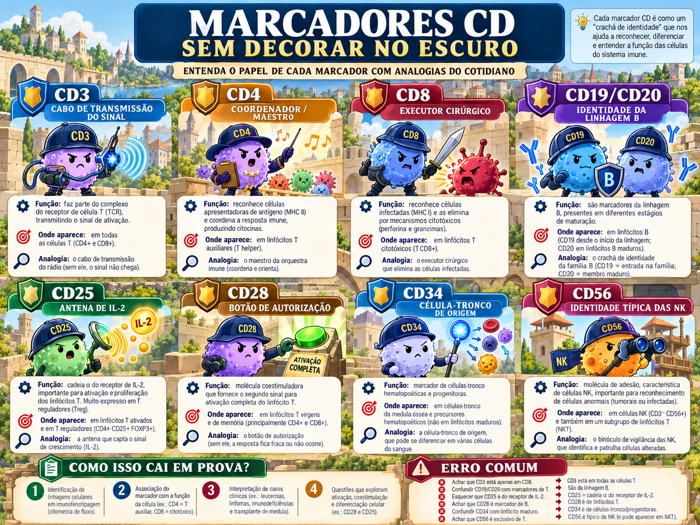
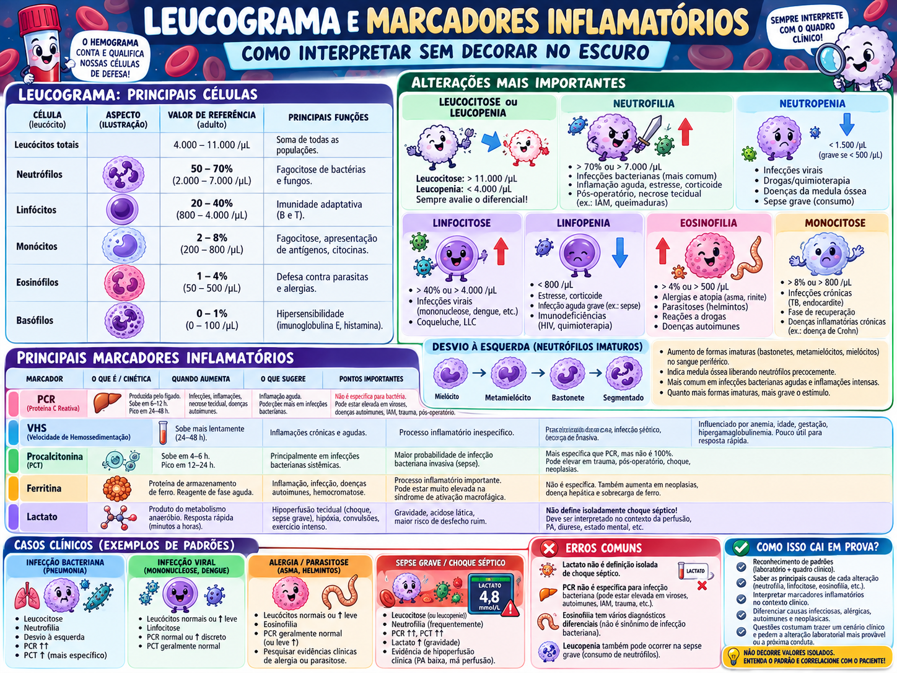

Células e tecidos do sistema imune
Quem são os atores, de onde vêm, quais “crachás” carregam e onde se encontram.

Como poucos linfócitos específicos encontram um antígeno em um corpo enorme?
A anatomia linfoide existe para resolver um problema de logística: concentrar antígeno e linfócitos num mesmo lugar e depois redistribuir células efetoras para o tecido. Essa pergunta explica por que existem linfonodos, baço, MALT e recirculação.
Hematopoiese: todo mundo vem do mesmo lugar
Multipotente e autorrenovável.
Neutrófilos, monócitos, eosinófilos, basófilos, mastócitos.
B, T, NK e ILCs.
Marcadores CD: não procure lógica no número
CD significa cluster of differentiation. O número reflete história de identificação, não função. Portanto, aprenda cada marcador pela célula + função + ligação clínica.
Neutrófilo × macrófago: bombeiro e engenheiro
| Neutrófilo | Macrófago | |
|---|---|---|
| Tempo | Chega cedo; vida curta no tecido. | Residente/mais duradouro; domina cronicidade. |
| Ferramenta | Grânulos prontos, explosão respiratória, NETs. | Citocinas, fagocitose, NO induzível, apresentação. |
| Função didática | “Bombeiro”: resposta rápida, intensa. | “Engenheiro”: coordena, mata e organiza reparo. |
Mastócito, basófilo e eosinófilo
Mastócito
Residente tecidual; histamina e outros mediadores. Central na hipersensibilidade imediata e na resposta a helmintos.
Basófilo
Circulante, raro; compartilha FcεRI e perfil de mediadores com mastócitos.
Eosinófilo
Grânulos tóxicos contra helmintos e participação em alergia/asma. Eosinofilia não significa automaticamente parasitose.
Célula dendrítica: a ponte que chama a adaptativa
É a APC profissional mais importante para ativar linfócitos T naive. No tecido, captura antígeno e recebe sinais de perigo; amadurece, aumenta MHC e B7, migra ao linfonodo via linfática e apresenta peptídeo ao clone T correto.
Órgãos linfoides: primários formam; secundários encontram
Primários
Medula óssea forma células e amadurece B. Timo amadurece T e seleciona repertório útil/seguro.
Secundários
Linfonodo concentra antígeno que chega pela linfa; baço filtra sangue; MALT guarda mucosas.
Leucograma: conte e qualifique
O hemograma não é apenas “alto ou baixo”. Primeiro olhe leucócitos totais; depois o diferencial; depois pergunte se o padrão combina com o quadro clínico.
Neutrofilia
Bactéria/inflamação aguda são clássicos; também estresse e corticoide.
Linfocitose
Muitas viroses e alguns cenários hematológicos.
Eosinofilia
Atopia/alergia, helmintos, drogas.
Monocitose
Crônicas e recuperação.

Contagem alta não significa chegada ao tecido
Criança com infecções bacterianas recorrentes, leucocitose intensa, cicatrização ruim e quase ausência de pus. Qual mecanismo é mais provável?